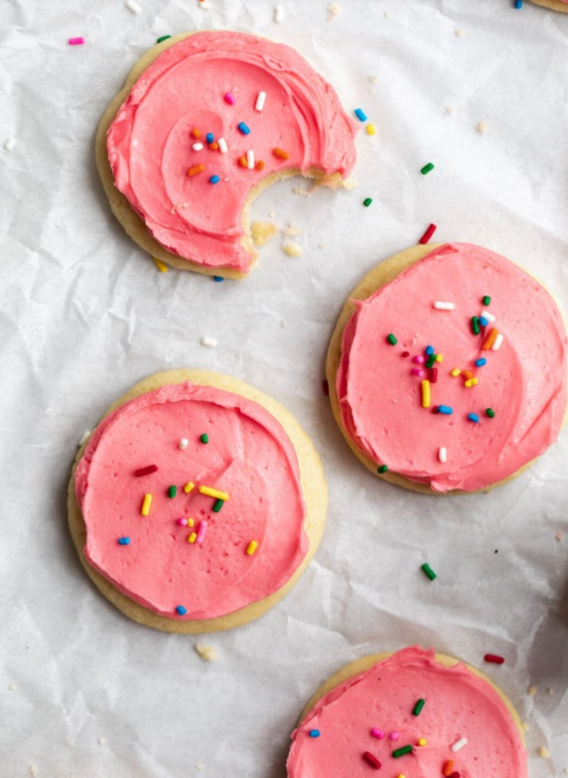
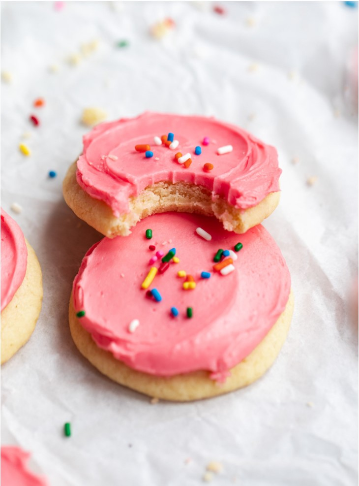
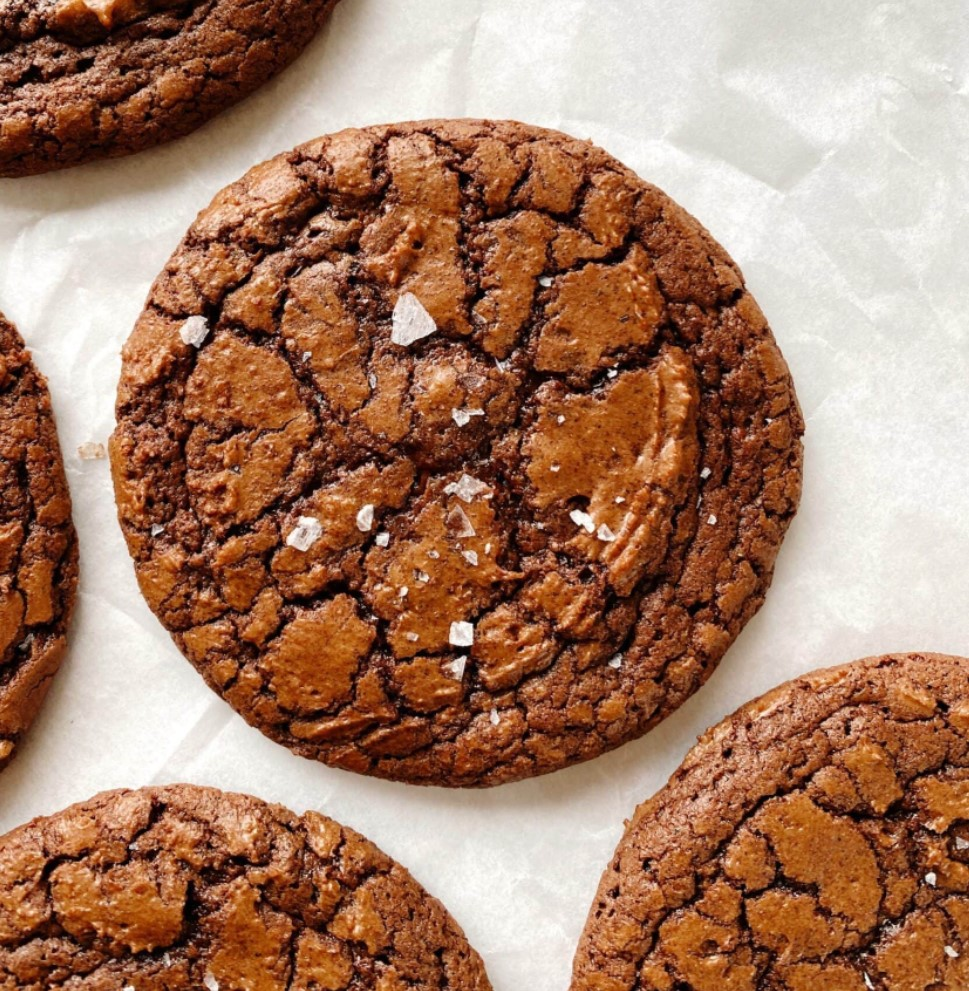
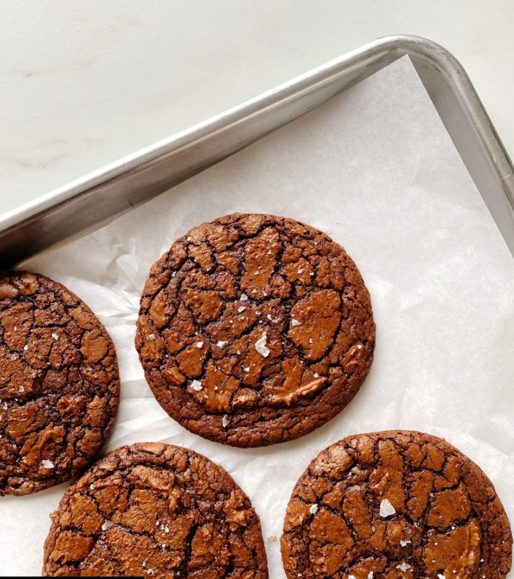

1. COPYCAT LOFTHOUSE COOKIES
These copycat lofthouse cookies taste exactly like the super soft, melt in your mouth sugar cookies from the grocery store. Get all that nostalgic soft sugar cookie-y goodness right at home without all the preservatives!

What are Lofthouse cookies? I’m assuming that if you’ve found yourself on this page, you probably are specifically looking for a homemade Lofthouse cookie, and have eaten many in your
lifetime. I know I have. Without fail, at every dance recital, bake sale, or holiday party I’ve seen a plastic container of these tried and true store bought cookies. But, if you’ve never actually had a Lofthouse cookie I will explain
why they are so good.They’re super soft with that tender crumb you usually find in cake, but they are not cakey or spongey. Lofthouse cookies have a distinctly artificial vanilla flavor, that somehow tastes almost better than real vanilla?
Weird, but true. They have the most tender, slightly dense, yet also airy texture that just melts in your mouth. They’re almost textureless. But again, in the best way. Plus they’re covered in a scrumptious frosting that seals in all of
that moisture. And this copycat lofthouse cookies recipe? It tastes just like the real deal.

2. Brown Butter Brownie Cookies
I love Brownie Cookies (and brownies!), and was excited to try this brown butter version from Jesse Szewczyk’s new book, Cookies: The New Classics. “Bittersweet chocolate, nutty brown butter, and molasses-y dark brown sugar meld together to create the
ultimate brownie cookies that is fudgy, dense, chewy, and pleasantly bitter.”

Brownie cookies emulate a regular brownie with rich chocolate flavor and a fudge-like center. Jesse writes that “[t]he key to getting the dramatic cracks on top is to be patient and whip the eggs until they are pale and ribbony,
and then work quickly so the melted chocolate doesn’t cool before the cookies go into the oven.” My kids proclaimed them absolutely delicious and I had to hide them from myself. I am a firm believer that there is room for all the cookbooks
and all the cookie recipes in the world, so I was excited to see Jesse’s new book on Cookies! It is a beautiful collection, and I am excited to bake more from it: the Malted Mudpie Whoopie Pies and Minty Shortbread Sandwich Cookies are
top on my list.

More Cookie Recipes:
Chewy Brown Sugar Cookies
Pan-Banging Chocolate Chip Cookies
Neapolitan Cookies